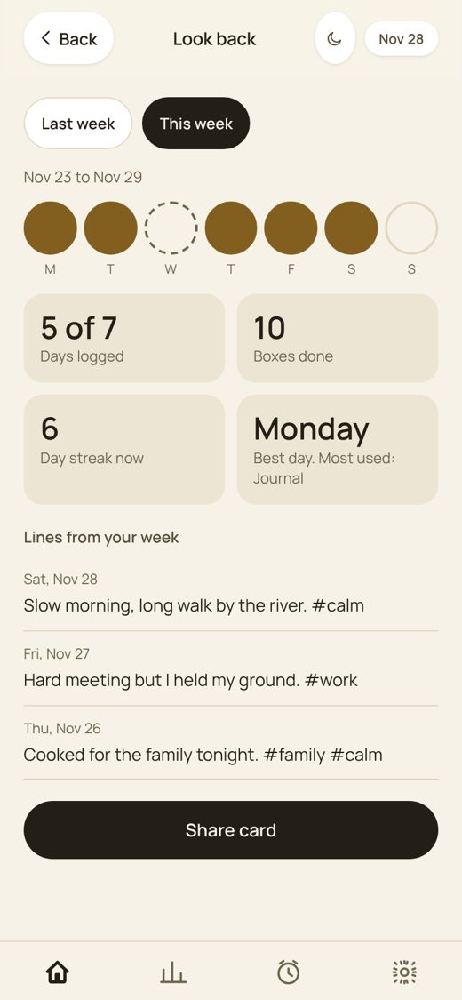
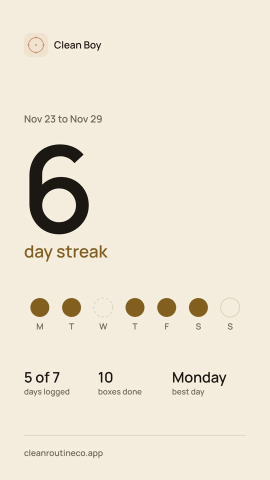
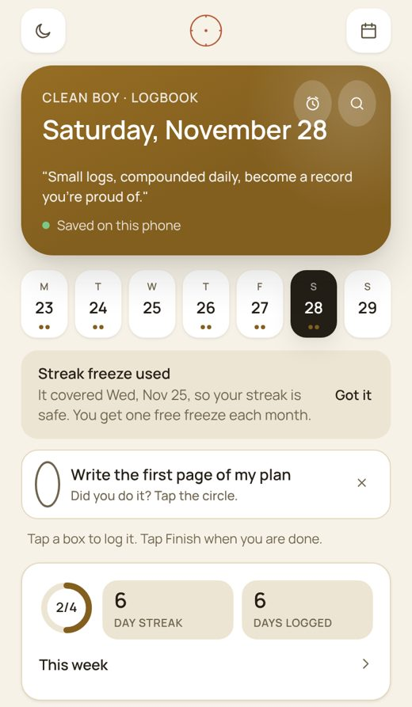
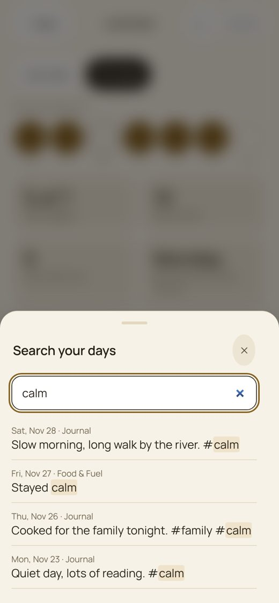
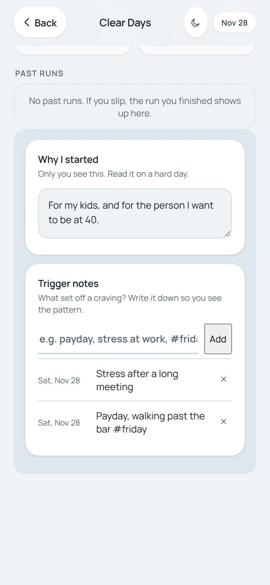
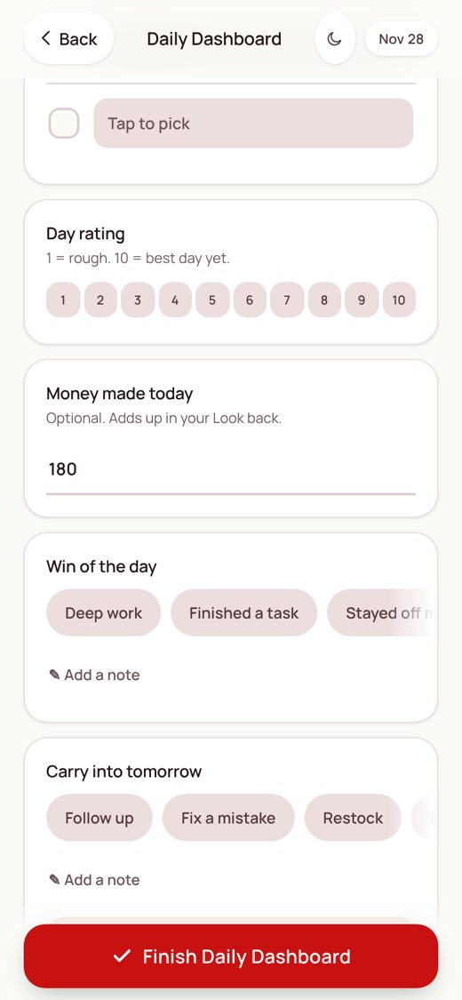
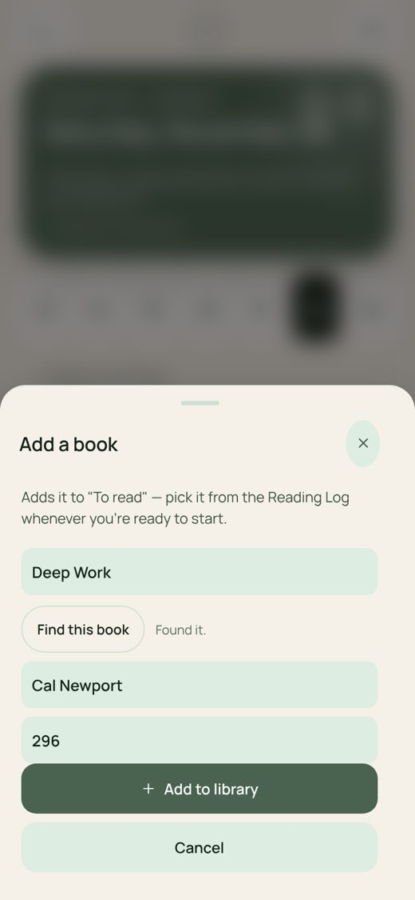
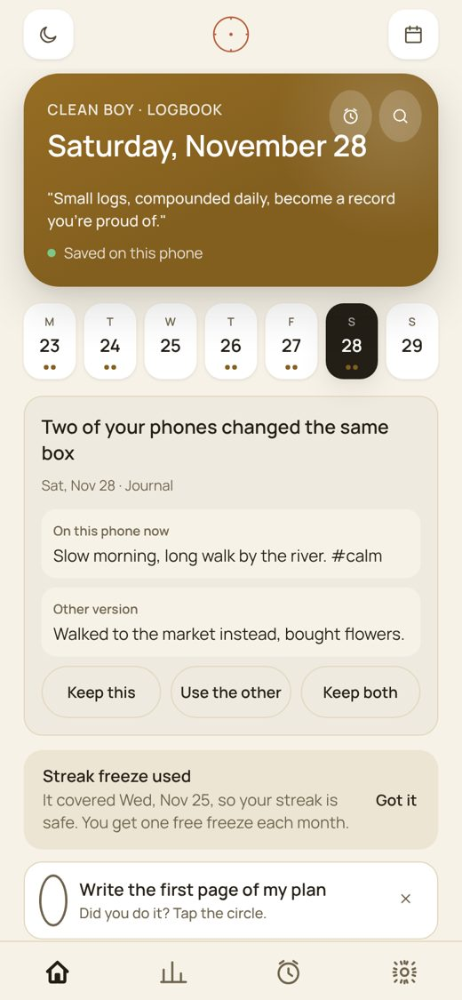
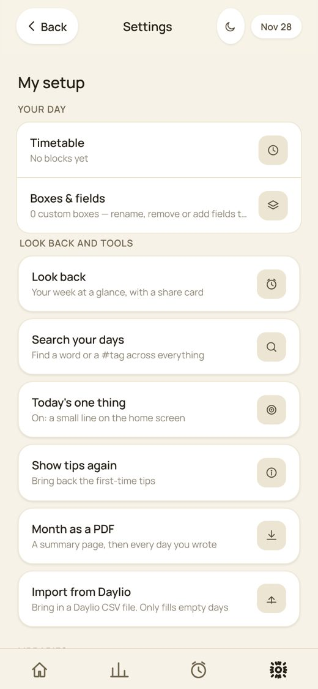

Look back at your week
Every logbook now has a weekly Look back. See which days you logged, what you finished and a few lines from your own notes. Flip between last week and this week. Find it under the clock icon on the home screen.
The latest update to your logbooks, one feature at a time. Everything here works offline, on your phone, and nothing is shared unless you choose to.
Version 1.4
Every logbook now has a weekly Look back. See which days you logged, what you finished and a few lines from your own notes. Flip between last week and this week. Find it under the clock icon on the home screen.

Turn your week into a picture, as a story or a square, light or dark. It shows your streak or Clear Days and nothing you wrote. Save it or send it straight from your phone.

One small line for the day. Tick it in the evening. It is optional in every logbook and you can switch it off in Settings. This screen also shows the monthly streak freeze: one missed day will not break your streak.

Tap the magnifier to find any word you have ever written. Put a #word in a note and it becomes a tag you can tap later. Nothing to set up.

In the Clear Days logbooks, keep the reason you started where you can read it on a hard day, and note what set off a craving so the pattern shows.

Hustler gets an optional "Money made today" box. Your Look back adds the week up and compares it with the last one.

Reading logbooks can look up the author, the page count and the cover from a title. Only when you are online, and the cover is saved on your phone.

If you changed the very same box on two phones before they synced, you are asked which version to keep, or to keep both. Everything else merges quietly, like before.

Save any month as a clean PDF with a summary page and every day you wrote. Moving from Daylio? Bring your CSV in and it fills your Journal without touching what is there.